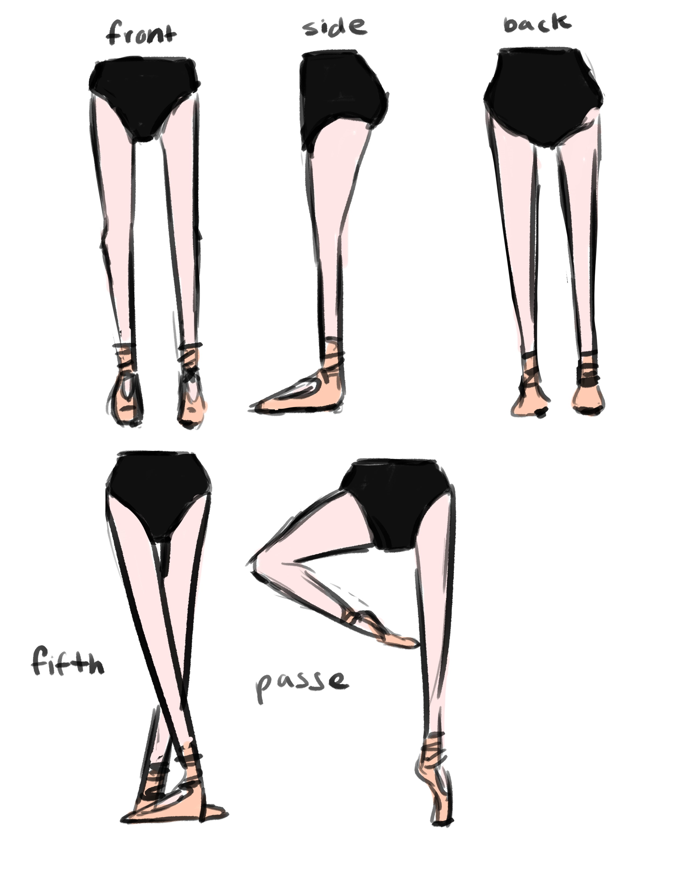
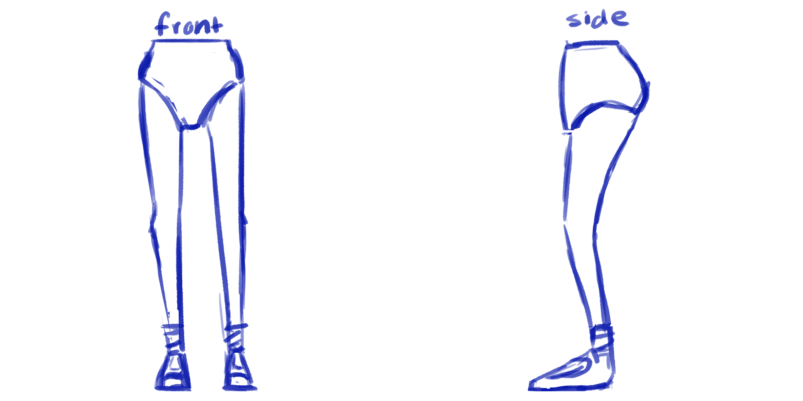

This was my final project for Animation 1. The assignment was to animate an interaction beween a character that was a hip and pair of legs, and a character that was a ball with a tail.

Though the final project focused on the animation of the characters, the semester leading up to the final heavily involved the character creation process. I started with the design of my character--a ballerina, and created some orthographic sketches.

I then modeled the character in Autodesk Maya and textured it with Substance Painter. I also modeled the ball and tail character after a scorpion. After creating the characters, I rigged them both, found and filmed reference footage and animated them. I then rendered out the scene with Arnold.